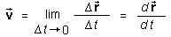
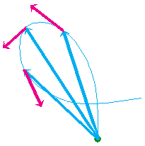

denotes the velocity at time t and
denotes the velocity at time t and  the position vector of
the mass point. The symbol D denotes the change in
position (displacement) between the instant at time t and a
later instant at time t + Dt,
the position vector of
the mass point. The symbol D denotes the change in
position (displacement) between the instant at time t and a
later instant at time t + Dt,
The following definition of velocity will be for a mass point. See Comment 3 at the end about what it means to talk about the "velocity of an extended object".
Definition of velocity in words:
Velocity is the time-rate-of-change of position.
Definition of velocity in symbols:

In this definition, denotes the velocity at time t and the position vector of
the mass point. The symbol D denotes the change in
position (displacement) between the instant at time t and a
later instant at time t + Dt,
D = (t + Dt) -
(t).
The symbol d/dt is calculus notation for the more explicit
notation with the limit symbol. When the notation
d/dt is
used in physics, it is useful to think of d and dt as very small
quantities and of the symbol d/dt as the ratio of these small quantities.
Velocity is a vector quantity, arising from ratios that have a vector in the numerator and a scalar in the denominator. The direction of the velocity vector at a given instant is the direction in which the tip of the position vector is moving at that instant, which is along the tangent to the mass point's path at that instant. See the following illustration which shows the path of a mass point in blue, three position vectors (in blue) pointing to three different positions of the mass point, and the mass point's velocity vectors (in magenta) at these three points.

The magnitude of the velocity is called speed. Speed is a
scalar quantity denoted either by v or ||.
The SI-unit of velocity is m/s.
Comment 1. The ratio D/Dt behind the limit operation in the
definition of velocity is called average velocity. With this
concept, the definition of velocity can be reworded as follows.
The velocity at time t is the limit of the average velocity over a time interval extending from time t to time t + Dt when Dt goes to zero.
Comment 2. When a motion is along a straight line, say,
the x-axis, most of the time one will be working with the
x-component vx of the velocity, instead of
the vector and will
be referring to vx as "velocity" instead of
"x-component of velocity", for brevity's sake. One may even
drop the subscript x and write just v instead of
vx, again for brevity's sake. However, one should
explain that v denotes velocity, not speed, unless this is
clear from the context.
Comment 3. When an extended object is moving, its parts may be moving with different velocities, e.g., the object may be rotating or the object may be vibrating. In such cases, one cannot just speak of "the velocity of the object".
In many cases, however, it will be possible to assume the object to be rigid and non-rotating. In such cases, all parts of the object have the same velocity and it makes sense to speak of the velocity of the object. In other cases, e.g., when the object is rotating in addition to performing some motion as a whole, one will mean the velocity of the center of mass of the object when speaking of the object's velocity. This should be made clear, however, unless it is clear from the context.